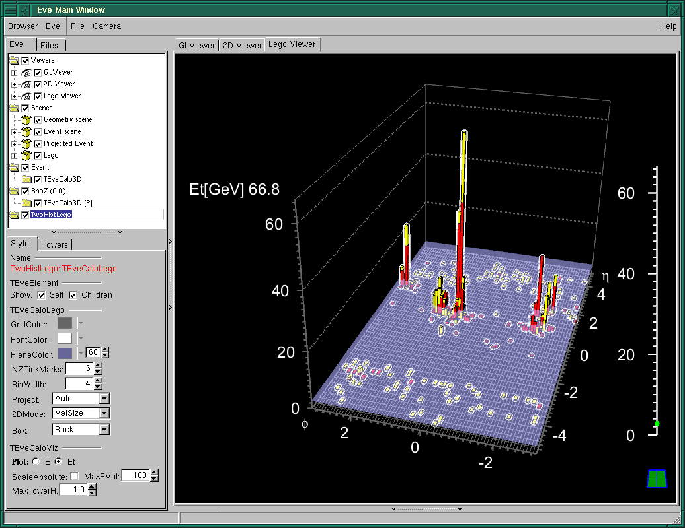

OpenGL
Major changes
- Reorganization of scene rendering in TGLViewer - render opaque
objects from all scenes first, then all transparent ones.
- Modularization of input event-handling in TGLViewer: all
event-handling is done by the TGLEventHandler class. One can
sub-class it now and modify behaviour of a given viewer. For
example, see TEveLegoEventHandler.
- Support highlighting of physical shapes for providing feedback and
showing selection.
Minor changes, fixes and improvements
- Improve saving of images from the GL-viewer so that the dialog
boxes and other windows do not result in black areas on the saved
image. The window must still be fully contained within the desktop.
- Improved camera controls. Three new orthographic cameras have
been added to TGLViewer, looking at the scene from another
side than the one present so far.
- Improved FTGL font management across rendering contexts and text
rendering support.
Performance issues with the latest ATI drivers
In late 2007 ATI switched to a new driver architecture. With these
drivers a significant degradation of GL performance in selection mode,
up to a factor of 50, can be observed. Both linux and Windows drivers
are affected. The best option for the time being is to stay with older
drivers.
Eve
Major changes
- Support for multiple, parallel OpenGL views that can show different
projections of the same event.
- Provide object selection and feedback highlight across all GL-views and
list-trees.

- New classes for visualization of calorimeter data
(TEveCaloXYZ, still under development, see
tutorials/eve/cms_calo.C. Available representations:
3D-cylindrical view, projected views r-phi and rho-z, and lego-view
(with dedicated event handler allowing detailed and scalable
inspection of the data).

Minor changes, fixes and improvements
- Improved handling of projected elements.
- For fish-eye projections, allow fixing of compression scale
beyond given distance from the center.
- TEveFrameBox now supports arbitrary 2d frame shapes -
user specifies individual points via SetQuadByPoints() function. See
tutorials/eve/quad_test.C::quad_test_circ() for an example.
- Consolidation of existing classes and code - Eve is still under rapid
development.